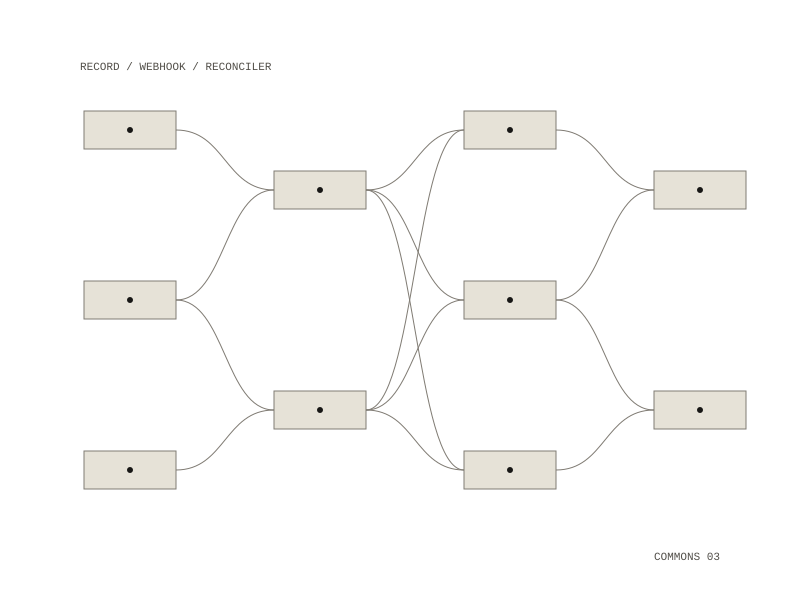

governance-service
Keeps a git commons' visibility matching what its admins actually decided. Members publish freely; what becomes readable beyond the member layer is a decision written in the governance repository, and this service makes that record true of the server.

Two halves
The reconciler runs on a timer. It reads every record, compares it with what the git server has, and corrects the difference, catching anything the webhook missed, anything changed while the service was down, and anything changed by hand in the web interface. The webhook only adds speed: seconds instead of a quarter of an hour. A bug in the webhook degrades the system without breaking it.
A repository with no record stays members-only. It becomes public to the commons only when its record says both that public is intended and that the rubric passed; a sanction in force keeps it members-only whatever else the record says. Repositories that were public before the gate existed are marked grandfathered, reported, and left alone.
What the webhook handles
- an issue opened on the governance repository: it runs the rubric and posts the results
- a label applied: it re-runs the required checks first, since a label is an instruction and not evidence
- a repository created public: failing checks put it straight back with an issue explaining why; passing checks honour it and write the record
- a push to a ratified repository: it re-checks, and on failure opens an issue instead of taking the repository private mid-work
Failing safe
Dry run is on unless the setting is exactly "false", so a typo leaves the safety on. The service holds a non-admin account's token, because an admin account reads every private repository whatever its token is scoped to. Its client has no delete method: a sanctioned repository loses visibility and is never deleted.
The policy module is pure, with no network and no clock, so it can be tested exhaustively; the whole suite of 34 tests runs in about a tenth of a second. One checks that reconciling twice changes nothing the second time; another checks that if the records cannot be read, the service refuses to run instead of taking every repository private. It does not decide anything and does not automate the judgement checks, which are reported as unchecked every time.
a reconciler on a timer, and a webhook
a non-admin token, with no delete method